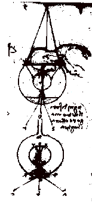
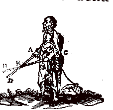
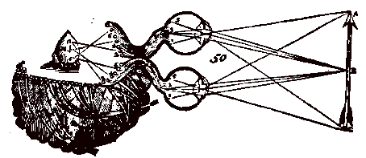

A grave problem confronted Kepler as soon as he accepted his calculations about the retinal image: the calculation required the image to beupside down and inverted from left to right. Kepler says "I tortured myself for a very long time" trying to invent a way by which this problem could be obviated. Kepler's admirable innovation was that instead of abandoning his theory, he simply abandoned the problem...
To explain why we nevertheless have the subjective impression of seeing the world right side up, Kepler noted first, that what counts is that the relative positions of the elements of an object should be preserved in the image even though the image as a whole is inverted; and second, that there should be a systematic correspondence between the positions of objects to be viewed and the eye movement necessary to view them. With these two points we would today agree. However Kepler further noted that each point of an object should be situated "opposite" each point in the image, and said in conclusion: "Here then is how I wish those who are concerned with the inversion of the image and who fear that this inversion might produce an inversion of vision, should appreciate the problem. The fact that illumination is an action does not make vision an action, but rather a passion, namely the passion contrary to this action: and similarly, so that the loci should correspond, it must be that patients and agents should be opposed in space. .... One need not fear that vision should err in position: Since to look at an object placed in a high position, one simply directs ones eyes upwards, if one has realised they are too low, and, as concerns their position, facing the object. On the contrary, it is rather the case that vision would be in error if the image were right-side up. (...) There would no longer be opposition (between the object and the image).... "[1].
Thus, though Kepler started off with the right idea, namely that what is important is that the retinal image should preserve the relative locations of objects with respect to each other, the rest of his explanation seems rather confused. I suspect that he is ill at ease, and that he had not totally understood the problem himself. This is particularly evident in the very last statement above where Kepler proposes that if the image were not inverted we would see the world inverted: as we shall see below, this is false, and shows that he himself has, in part, fallen into the same trap that had ensnared his predecessors.
One illustrious predecessor who had been troubled by the inverted retinal image was Al Hazen. Al Hazen had proposed that the first stages of sensation occurred at the front surface of the crystalline humor before any crossing of the visual rays had occurred. He thereby obviated what he says would be a "monstrous" distortion of sensation that would be provoked by inversion of the image[2].
Leonardo da Vinci was also concerned with the problem posed by the upside down world: Leonardo knew of the camera obscura, and thought that the eye functioned in a way similar to it. Even though he had not conceived of the notion of an image on the retina as we know it now[3]: he obviously thought that the ordering of the rays in the eye determined the orientation of perception. Thus, in his treatise On the eye, he suggests six schemes by which the path of light rays within the eye might cross in such a way that they arrive correctly oriented when they arrive at the back of the eye[4]. In one of these, he suggests an "... experiment which demonstrates how the visual virtue employs the instrument of the eye."[5] In this, a sphere filled with water (simulating the crystalline humor) is suspended inside and at the center of a larger sphere, also filled with water (simulating the vitreous)[6] with an aperture at the base allowing light to enter (simulating the pupil). He says: "Then put your face into the water and look into the inner sphere, and you will see how such an instrument dispatches the species (of any object outside) to the eye just as the eye sends it to the visual virtue."

Sketch from Leonardo da Vinci demonstrating how the crystalline lens could operate to re-invert the retinal image and make it upright.
Very soon after the publication of Kepler's book, the jesuit astronomer Christoph Scheiner, and also René Descartes, proceeded to verify Kepler's predictions of an inverted image at the back of the eye by cutting away the outermost coats of the back surface of the eye of an ox or of a newly deceased human. Leaving only a thin, translucent layer, it is possible to actually see an inverted image of a bright scene, just as such an image would be received in the living animal's eye. In fact Descartes mentions how by lightly squeezing the eye it is possible to modify the focus of the image, exactly as Kepler predicted. In any case, after this incontrovertible experimental confirmation, there was no further room for doubt about the existence of an image and about the fact that it was inverted, and some kind of reasoning had to be provided for why the world did not seem inverted to the viewer.
Descartes seems to be the first person to have clearly expressed what I would consider to be the correct solution. First he points out why the problem arises in the first place: it is because one is tempted to think that the act of "seeing" amounts to having, somewhere in the brain, a little picture that can be looked at by the mind. He then dismisses this notion by pointing out that the code which instantiates sensations in the brain need have no resemblance to the sensation itself[7]. To illustrate the idea with a contemporary example: most scientists agree today that the color and intensity of a red light is not coded in the nervous system by the amount of some kind of 'redness' oozing out of nerve fibres somewhere, but by the particular combination of nerve fibres that discharge, and the frequency with which they discharge. The combination of fibres and their discharge frequency are the code which symbolize the color and the intensity of the visual stimulation[8].
Descartes then goes on to point out that so long as there are systematic rules that link eye or body motions to changes in the retinal image, the brain will be able to construct a correct representation of space. Descartes takes the analogy of a blind man who is exploring his environment with the aid of a stick AD, held in his right hand and a stick, CB, held in his left hand. Even though the blind man may cross the sticks in front of him, just as the image is inverted on the retina, no confusion concerning the location of objects will result from this[9].

Descartes' blind man probing the environment with sticks. No confusion arises concerning the location of objects despite the fact that the sticks are crossed.
The clarity with which Descartes expresses these points suggests to me that he has really understood them. However there is a slight trace of doubt. Descartes' notion of the nervous system consisted in the idea that nerve fibres are thin tubules filled with Galen's "animal spirits", and within which are stretched extremely delicate threads used to transmit the movements produced on the retina into the brain. Descartes thought that the inside surface of the ventricles was a kind of screen where the image from the eye was projected. Here it is analysed by the pineal gland, which Descartes considered to be the seat of the soul[10].
A superficial reading of Descartes' text does seem to suggest that the pineal gland is "looking at" the image produced by the nerves on the inside surface of the ventricles. This view would seem also to be reinforced by a telltale sign visible in the engraving that Descartes includes in his text and reproduced here: The lines connecting the tubules set into the ventricle to the pineal gland are crossed! Obviously the reason for this is so that the image "seen" by the pineal gland should be right side up! This detail, to which Descartes does not refer in the text, seems to suggest that the pineal gland is somehow like a little man looking at the image. It is therefore not surprising that the contemporary philosopher D. Dennett refers to a notion he calls the "cartesian theatre": the little theatre or cinema screen in the brain that the "mind" is supposed to look at in order to see...

Showing how Descartes crosses the fibres going from the inside surface of the ventricles to the pineal gland.
On the other hand, and as has been shown by the quotations given here, everything Descartes says actually argues against the supposition that he had such a naive view of perception. In fact he goes on to say:
"Now although this picture, being so transmitted into our head, always retains some resemblance to the objects from which it proceeds, nevertheless, as I have already shown, we must not hold that it is by means of this resemblance that the picture causes us to perceive the objects, as if there were yet other eyes in our brain with which we could apprehend it; but rather, that it is the movements of which the picture is composed which, acting immediately on our mind inasmuch as it is united to our body, are so established by nature as to make it have such perceptions;" Descartes, Optics, Sixth Discourse. p. 101 in trans. by P.J. Olscamp.
I think we should give Descartes the benefit of the doubt and assume that the crossing of the lines in his diagram was an error, perhaps simply on the part of the engraver: We must remember that preparing a figure for a text was probably a much more tedious process than today and errors made by artists or engravers may have been harder to correct[11]. At any rate from Descartes' text it is clear that his view is that even though things maylook wired up in the brain as though there might be some kind of internal screen, in fact this has nothing to do with the way we see the world.
Today, most scientists adopt a point of view according to which the experience of seeing is not produced by the projection of visual information onto any internal screen. When questioned, scientists will all agree that vision takes place when (and through) the fact that visual information modifies the state of the brain in such a way that it is able to react to the information appropriately. The particular code in which this capacity to react is expressed is of no importance[12]
But whereas this way of thinking is used to solve the problem of the inverted retinal image, we shall see in the following chapters other examples of defects of the visual system for which scientists attempt to find compensatory mechanisms similar to the crossed fibres of Descartes. Without realizing it, scientists have again fallen into a way of thinking in which they implicitly presuppose the existence of an internal being or homunculus, who perceives the information brought in by the visual system. Despite the fact that everyone agrees that it is necessary to officially bannish the homunculus from vision science, its ghost haunts our thought and insidiously influences our research programs.
For example, it is known today that the nerve fibres from the retina project into the occipital cortex, at the back of the brain, and spread out into what is called a cortical 'map': each point of this map corresponding to a point of the visual field. It is easy to make the error of believing that stimulation of this cortical map is what gives us the sensation of seeing, and that the organisation of the visual field is determined by the nature of this map. In particular, a number of workers have proposed mechanisms to "fill in" parts of the map that arise through defects in the way the eye samples the visual information coming into the eye[13]. One such defect is the blind spot, which we will discuss later...
Another example of the same kind of error is the enthusiasm with which people have received the recent discovery that the visual cortex becomes active when a person visually imagines something, even with the eyes closed. I think the interest that this work has elicited derives from the erroneous idea which it surreptitiously suggests, namely the idea that activity in visual cortex is itself what underlies the experience of seeing (thus implicitly giving a special 'experiencing-ability' to visual cortex that other parts of cortex lack)[14]. Obviously this cannot be true, as demonstrated by the simple thought experiment in which everything except visual cortex is, by some miraculous surgical procedure, extirpated from the brain, without activity of visual cortex being interfered with: no one would claim that such a brain could have visual sensations... This shows that visual sensation must derive from the conjunction of activity in visual cortex and other brain areas. But then the discovery of activity in visual cortex during mental imagery is of no special interest. I will also come back to this rather delicate problem later.
[1](Kepler, Ch. V prop XXVIII section 4.p. 369-70 in french translation)
[2]But he nevertheless also claims that the incoming light does propagate deeper into the ocular media, where further consolidation of sensation occurs. Because it is known that the visual rays must ultimately cross, this evidently drove an anonymous student of vision to write "dubitatio bona" in the margin of a 14th or 15th Century latin manuscript of Al Hazen's De Aspectibus to be found in the library of Corpus Christi College at Oxford. And to this it seems a second glossator of the manuscript added a diagram suggesting a solution in which rays crossed over yet again within the eye "ut forma veniat secundum suum esse ad ultimum sentiens" (in order that a form arrive at the ultimum sentiens in accord with its true being (i.e. right side up)) B. Eastwood (1986) discusses these glosses in detail in an article in which he considers the question of retinal inversion, as seen by Al Hazen and Leonardo.
[3]according to Lindberg, p. 164
[4]cf Lindberg p 166; Eastwood p. 434 ff.
[5]quoted by Lindberg, p. 164, citing Strong, Leonardo on the Eye. Lindberg p. 266, note 44 gives a number of references to translations of Leonardo's work on the eye.
[6]Leonardo's notion of the shape and location of the crystalline is not accurate, nor, it seems, is his terminology for crystalline and vitreous humors systematic. cf. Eastwood, p. 437 note 66, and p. 438..
[7]"Apart from that, it is necessary to beware of assuming that in order to sense, the mind needs to perceive certain images transmitted by the objects to the brain, as our philosophers commonly suppose; or at least, the nature of these images must be conceived quite otherwise than as they do: For, inasmuch as [the philosophers] do not consider anything about these images except that they must resemble the objects they represent, it is impossible for them to show us how they can be formed by these objects, received by the external sense organs, and transmitted by the nerves to the brain. And they have had no other reason for positing them except that, observing that a picture can easily stimulate our minds to conceive the object painted there, it seemed to them that in the same way, the mind should be stimulated by little pictures which form in our head to conceive of those objects that touch our senses; instead we should consider that there are many other things besides pictures which can stimulate our thought, such as, for example, signs and words, which do not in any way resemble the things which they signify." Descartes, Optics, Fourth discourse (p. 89 in trans. by P.J. Olscamp)
[8]In fact he perception of color is only very approximately related to firing frequency in the optic nerve, since the actual sensation of redness is strongly related to the other colors that are visible in the visual field. Currently there is much work being done to study such phenomena of color constancy.
[9]"So that you must not be surprised that the objects can be seen in their true positions, even though the picture they imprint upon the eye is inverted: for this is just like our blind man's being able to sense the object B, which is to his right, by means of his left hand, and the object D, which is to his left, by means of his right hand at one and the same time. And just as this blind man does not judge that a body is double, although he touches it with his two hands, so likewise when both our eyes are disposed in the manner which is required in order to carry our attention toward one and the same location, they need only cause us to see a single object there, even though a picture of it is formed in each of our eyes." Descartes, Optics, Sixth Discourse, trans. P.J. Olscamp, p. 105.
[10]"Further, not only do the images of objects form thus on the back of the eye, but they also pass beyond to the brain, [...]. [...] And that, light being nothing but a movement or an action which tends to cause some movement, those of its rays which come from [the object] have the power of moving the entire fibre [leading to the brain]... so that the picture [of the object] is formed once more on the interior surface of the brain, facing toward its concavities. And from there I could again transport it right to a certain small gland [the pineal gland] which is found about the center of these concavities, and which is strictly speaking the seat of the common sense. I could even go still further, to show you how sometimes the picture can pass from there through the arteries of a pregnant woman, right to some specific member of the infant which she carries in her womb, and there forms these birthmarks, which cause learned men to marvel so." Descartes, Optics, Fifth Discourse; p. 100 in trans by P.J. Olscamp.
[11]An example of such an occurrence occurs in Kepler (Paralipomenes Ch. V, section 2), who. reproduces a table containing a set of figures from Plater illustrating the parts of the eye and complains: "there are 19 figures, the last two (showing the organs of hearing) were added by the engraver although I had not requested it."
[12]This way of thinking about perception had already been expressed by Berkeley (1709) and Reid (1764) cf Wade, 1996 p.1140
[13]cf review article by Pessoa, Thompson & Alvoa, BBS 1998.
[14]Kosslyn and associated refs. Note however that Kosslyn himself is careful to stress that the presence of activity in occipital cortex is not, in his opinion, what is creating the qualia of visual perception. However the enthusiasm with which this kind of finding has been greeted, and the fact that it has generated vigorous debate, with some scientists claiming that V1 is, after all, not always active during mental imagery, shows that even though Kosslyn himself does not fall into the homunculoid trap, many people that read him do...